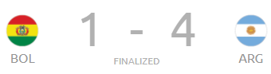
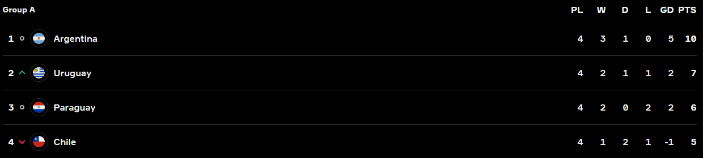

Day 10
Uruguay v Paraguay
Goals
Cavani (P) 21'
Seems to be a drab game overall. Uruguay were threatening but not clinical enough. A penalty which was given by VAR was put in by Cavani. This means they are through and avoid Brazil in the Quarters.
Bolivia v Argentina

Goals
Gomez 6'
Messi (P) 33'
Messi 42'
Saavedra 60'
Martinez 65'
Great game from Messi who is now Argentina’s all time leader in appearances. 2 goals and an assist for Papu Gomez who scored the opener after just 6 minutes. Later Messi put away a penalty to double Argentina’s lead. Later, he scored a brilliant chip after being set up by Aguero. Later Bolivia did score after the Argentina defence went ball watching but that was it in terms of a comeback. Lautaro Martinez managed to score after a simple chance came to him on a plate. Argentina go through as group toppers. As for Bolivia, well the table will speak now.
Qualified from Group A

Eliminated in Group A
Quarterfinals of the Copa America
- Peru v Paraguay
- Brazil v Chile
- Uruguay v Colombia
- Argentina v Ecuador